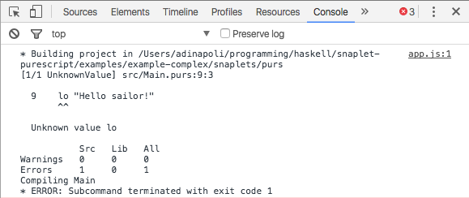

Easy integration between Snap and your next PureScript project? Yes please.
This snaplet makes integrating your PureScript project a breeze. Add it to your Snap server, and get started in minutes. If you don't have a project yet that's fine, snaplet-purescript will create one for you via Pulp.
Shows compilation errors in the JS console
Edit your PureScript files, reload the page and let purescript-snaplet recompile them for you. No need to stop the server.
Plays nicely with purescript-psa
You can pass custom options to purescript-psa directly from your Snaplet's configuration.
Supports multiple versions of Pulp and PureScript
You can install a local version of Pulp and PureScript and configure snaplet-purescript to pick them up. Easy!
Simple yet powerful hook system
Run custom actions during the entire lifecycle of your snaplet.